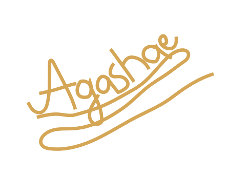
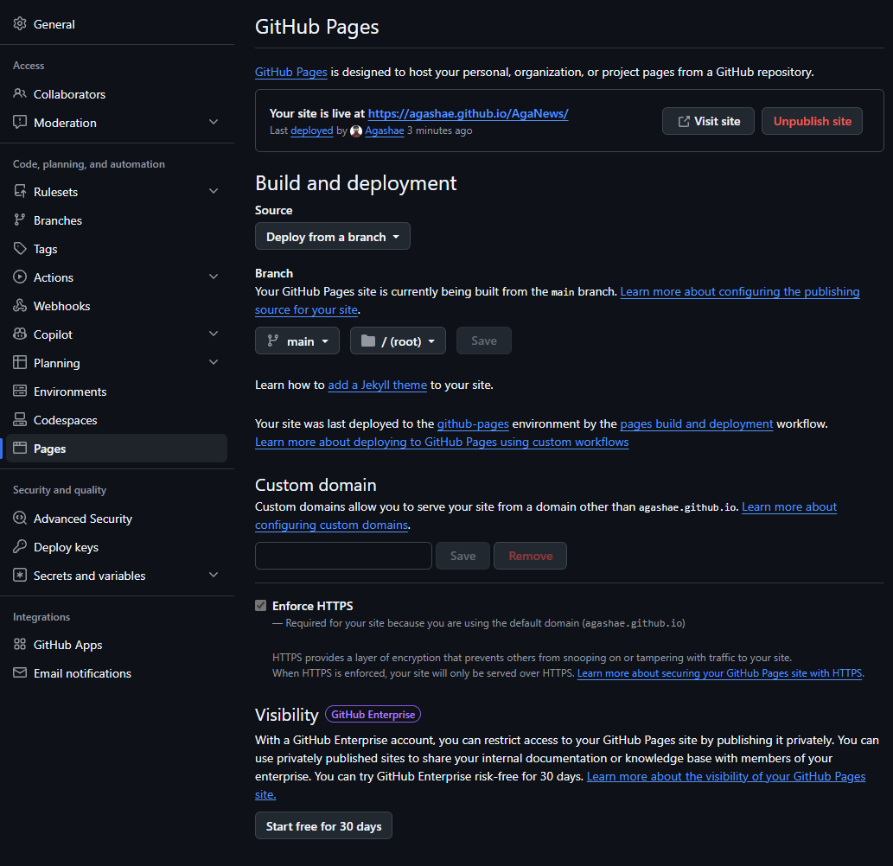
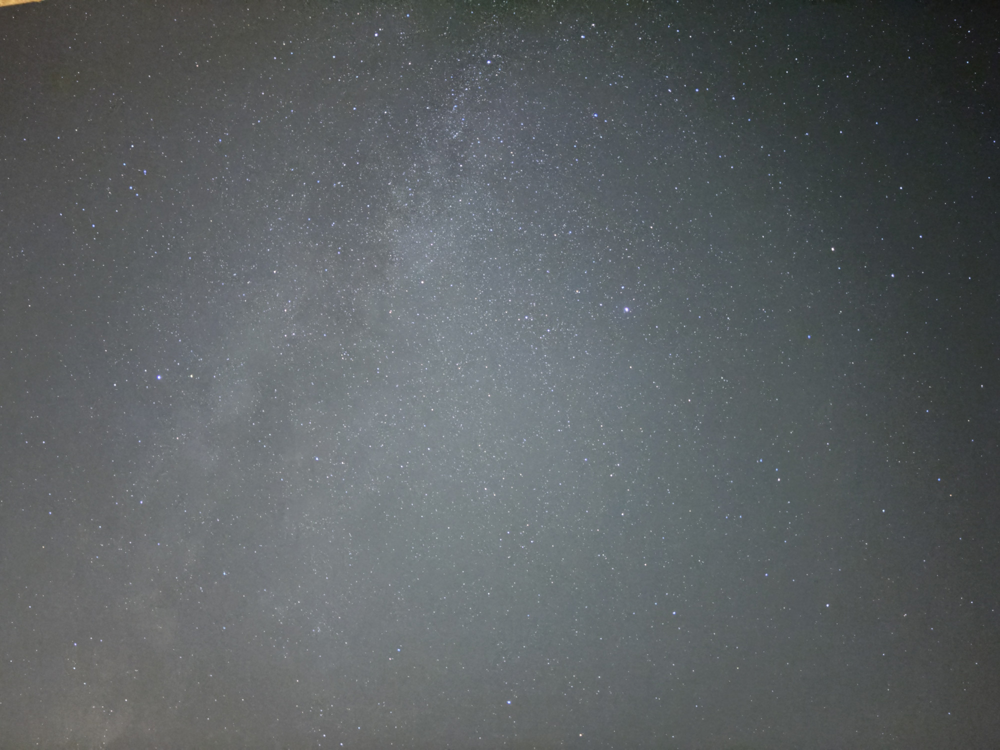
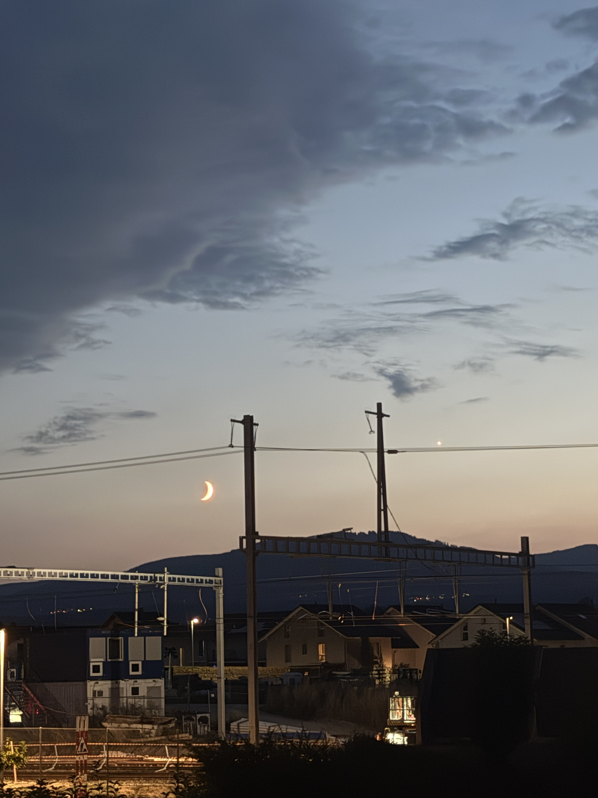
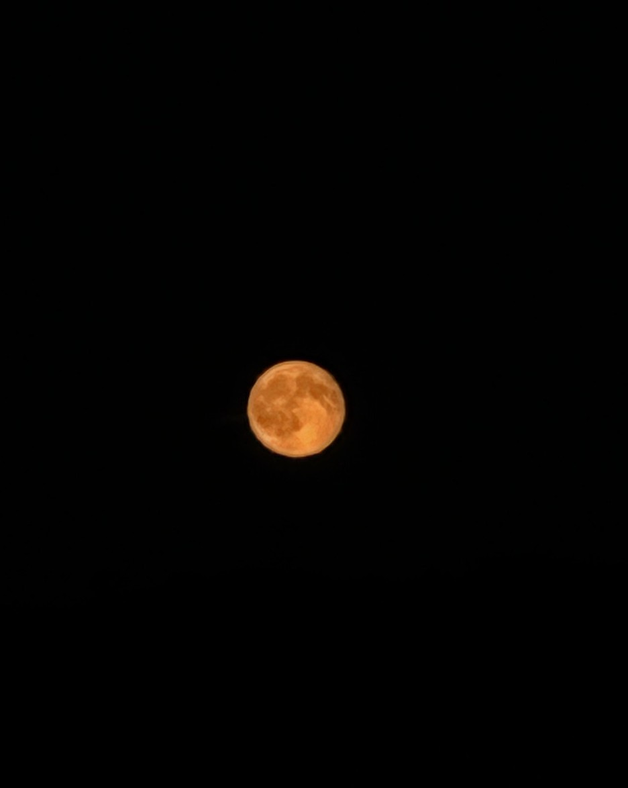
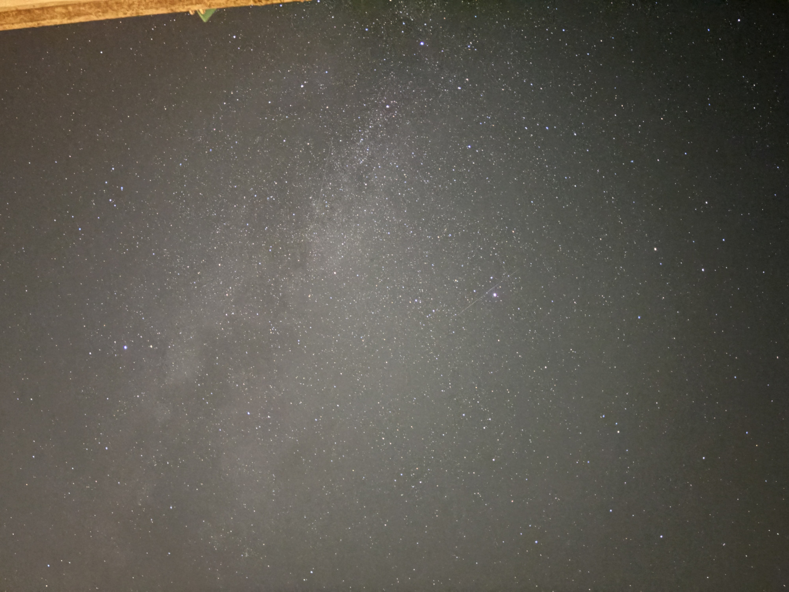

Vous pouvez scroller si vous êtez curieux ou rechercher si vous avez un article précis
Mon site publié gratuitement avec GitHub Pages

13.10.2026Mon carnet pour comprendre le ciel, avec mes notes et mes photos

14.10.2026Les 8 planètes, leurs familles et comment les reconnaître dans le ciel

27.09.2026La Lune toute orange, encore basse sur l'horizon

16.08.2026Un fin croissant de Lune et Vénus juste à côté, au coucher du soleil
13.08.2026Une nuit sans Lune, idéale pour voir la Voie lactée depuis mon balcon

01.08.2026La pleine Lune qui perce entre les nuages, en pleine nuit